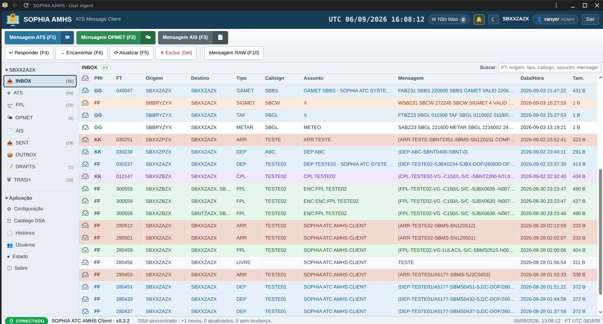
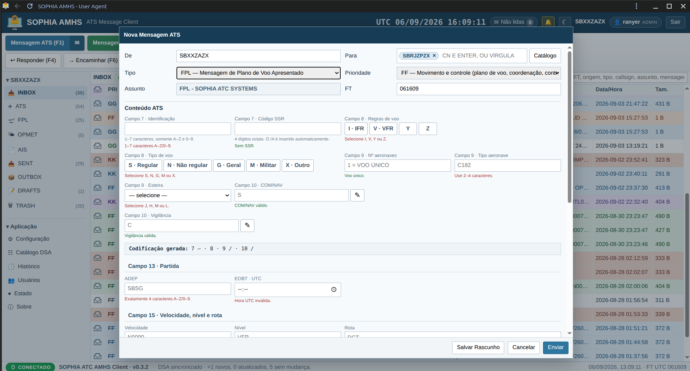
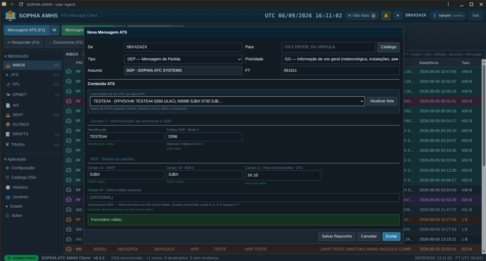
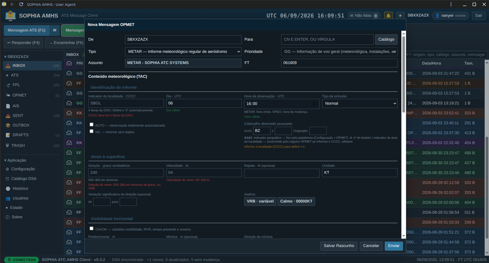

OSI transport
ITOT/TPKT over TCP and COTP (class 0), the framing AMHS uses to carry the session PDUs.
Aeronautical Messaging · X.400 P7 · X.500
A User Agent for the ATS Message Handling Service (AMHS).
SOPHIA AMHS is a workstation for operational access to AMHS, enabling users to compose, transmit, receive, query and manage aeronautical messages over the X.400 P7 protocol. It integrates an X.500 directory, guided composition of ATS, OPMET and AIS messages, local storage and traceability of operator actions.

Inbox with priority, origin/destination, type, callsign and filing time for every message.
SOPHIA AMHS serves as the operational interface between the user and the AMHS server. Through P7 associations, it performs authentication, submission, listing, retrieval and deletion of messages, processing server responses in accordance with the X.400 architecture.
Each communication cycle establishes an association with the server, performs the required operations and closes the session in a controlled manner. The status shown to the operator reflects the result confirmed by the server: a message is only recorded as sent after its submission has been confirmed.
Developed in line with ITU-T X.400 / X.420 / X.500 and ICAO Doc 9880 (ATN/OSI technical specifications — AMHS).
End-to-end AMHS communication
The client directly implements the protocols required to communicate with the AMHS server, from OSI/ITOT transport to P7 operations, including session, presentation, ACSE and ROSE. Protocol structures are encoded in ASN.1/BER and verified through encoding and decoding tests.
ITOT/TPKT over TCP and COTP (class 0), the framing AMHS uses to carry the session PDUs.
OSI session (connect/finish) and a presentation layer that negotiates the abstract-syntax contexts used on the association.
Association establishment and release (AARQ/RLRQ) and the remote-operations mechanism (invoke / return-result / return-error / reject).
ms-bind, message-submission, message-list, message-fetch and message-delete against the server message store.
Building and reading the IPM envelope — heading, originator, recipients, subject and body — with directory O/R names.
Every ASN.1/BER encoder and decoder has a round-trip test that exercises the same wire shape exchanged with the server.
The interface organizes traffic into dedicated mailboxes — Inbox, ATS, FPL, OPMET, AIS, Sent, Outbox, Drafts and Trash — with search by filing time, origin, type, callsign, subject or content.
Automatic receipt: on each cycle the client lists the store, fetches every entry it does not yet know and places it in the inbox. The operation is idempotent — fetching twice never duplicates a message.
Confirmed sending: the message is composed as an IPM, submitted to the server and moved to Sent only with a real submission result; on failure it stays in the Outbox for resubmission.
Deletion in the right order: the client runs the deletion on the server first and only then moves the local copy to Trash. A local deletion is never undone by a remote failure.
Forward and reply: reply, forward and resubmit from the reading bar, with multi-select and optimistic deletion that reverts if the server rejects it.
Virtual mailboxes automatically separate ATS, flight plans, weather and aeronautical information.
Guided composition and decoded reading
Each message type has a guided form that builds the wire text from labeled fields, with a live preview and two-layer validation — in the browser and on the server. Free text is coerced to the permitted AFTN character set before it reaches the message body. On reading, each group is decoded into plain language.
Field-by-field composition of FPL, CHG, DLA, CNL, DEP and ARR, folding the text onto the canonical lines that AMHS processors expect. It recognizes the AFTN envelope (priority and filing time) and splits the body fields on reading.
Developed in line with ICAO Doc 4444 (PANS-ATM, Appendix 3 — ATS Messages) and ICA 100-15.
A guided form for METAR, SPECI, TAF, SIGMET and AIRMET in TAC format, building the WMO abbreviated heading and the coded body. Incoming METAR and SPECI are recognized and open decoded group by group.
Developed in line with ICA 105-1 / 105-15 / 105-16 / 105-17.
Composition of national NOTAM, ASHTAM and SNOWTAM over the same P7 transport, with the qualifier line, fields A) to G) and a structured day/time editor. The NOTAM codes come from a versioned dataset, not hard-coded.
Developed in line with ICA 53-1, TCA 53-1 and ICA 53-10.



Every sent message requests a non-delivery report from the server. If an address does not resolve, the server returns an NDR that the client recognizes: the message goes back to the Outbox marked as not delivered, with the stated reason, and the Resubmit button becomes available as soon as the address is fixed.
The report is stored and matched to the original message by the submission identifier, and the event is recorded in the history as a system event.
The catalogue is a local base with field-by-field manual entry — CN, OU, O, PRMD, ADMD, C — and a preview of the address canonical form. Synchronization with the directory is operator-triggered, shows a progress bar and, when the directory diverges from a manually edited entry, opens a modal asking what to do.
An edited entry is treated as manual and is no longer silently overwritten. The table has search and pagination; every operation is audited.
Local storage
The message archive lives in a local base on the equipment itself, with mailboxes represented by a folder field. Receipt is idempotent by the remote sequence number, so repeated queries to the server never produce duplicate copies.
Each message is indexed by its remote identifier; a new receipt cycle does not reintroduce what is already in the archive.
Deleting from the Trash does not remove the record: it is marked as purged, leaves every view and is retained for audit.
Deleted messages stay 30 days in the history — answering “who deleted what” — and only then are removed for good, automatically.
Access, roles and action logging
The interface requires a login. This access layer is local to the console — it identifies who is operating the client for the audit trail — and is kept separate from the AMHS identity, which is shared infrastructure. Console passwords are stored with key derivation (PBKDF2-HMAC-SHA256), and sessions use an opaque token with a sliding expiry.
Administrator — who manages users — and operator. Everyone sees every message and the full history; the only difference is who manages accounts.
Login and logout, reading, sending, drafting, resubmitting, moving to trash, purging, restoring, manual and automatic receipt, user and catalogue changes, printing — always with the author.
Reading records one row per distinct reader — that is how the question “who saw this message” is answered without relying on anyone's memory.
The History screen is open to any authenticated user: traceability is a shared asset of the operation, not an administrative privilege.
An initial administrator is created on first run, idempotently, with its own password-recovery path.
Session cookie restricted to the host itself, API requests blocked without a valid session, and a short sliding expiry.
The reading bar produces a PDF with a letterhead, a metadata block — type, direction, attachment, priority, date and time, originator and recipient O/R, subject and identifier — and the message text in a monospaced font. Each page footer carries the identifier, the generation time and the page number; long bodies paginate on their own. Every print is recorded in the history.
Letterhead configurable per installation
Complete message metadata
Identifier on every page
Generation time in the footer
Inbox and guided composition of ATS and OPMET messages, in light and dark themes.
Normative basis
International and national standards observed during the development of SOPHIA AMHS. This list indicates the references adopted as a technical basis and does not constitute a declaration of certification or approval.
SOPHIA AMHS was designed to exchange messages with the AMHS infrastructure over the standard protocol and, at the same time, keep a record of every operator step — from reading to purge. It follows the same logic as the other SOPHIA solutions: integrated information, auditable events and a faithful reconstruction of the scenario.